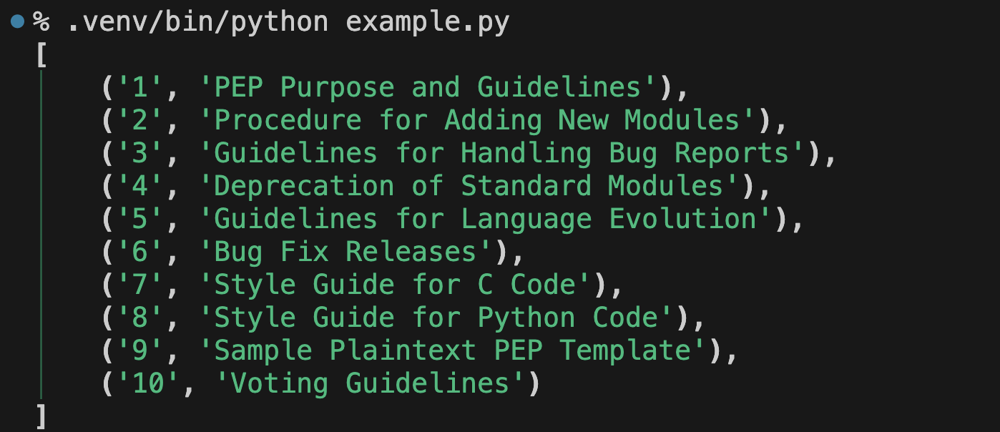

PEP 723（Inline script metadata）が拓く世界。Pythonスクリプトに必要な仮想環境をツールにおまかせできるんです！
PEP 723（Inline script metadata）が拓く世界。Pythonスクリプトに必要な仮想環境をツールにおまかせできるんです！
- Event:
PyCon JP 2024
#pyconjp_1- Presented:
2024/09/27 nikkie
突然ですが、LT します
粗い要点✨ を5分で伝えます
その後25分間、2周目 です
サンプルスクリプト
PEP＝ Python Enhancement Proposal （Pythonの機能提案文書）
PEPの一覧をJSON形式で取得できると知ったのでやってみたい
このライブラリを使おうかな
httpx ：HTTPクライアント（金曜 16:40〜 20F #pyconjp_2）
rich ：ターミナルにリッチなテキストで出力
試す際はお好みのライブラリに読み替えください
PEPの一覧をJSON形式で取得するスクリプト
import httpx
from rich.pretty import pprint
resp = httpx.get("https://peps.python.org/api/peps.json")
data = resp.json()
pprint([(k, v["title"]) for k, v in data.items()][:10])
スクリプトができたからといって実行すると
$ python example.py
Traceback (most recent call last):
File "/.../example.py", line 1, in <module>
import httpx
ModuleNotFoundError: No module named 'httpx'ライブラリのインストール が必要です
仮想環境にライブラリをインストールしてから動かす
$ python -V
Python 3.12.6
$ python -m venv .venv --upgrade-deps
$ .venv/bin/python -m pip install httpx rich
$ .venv/bin/python example.py仮想環境で実行したスクリプトの出力
実は、私たちが仮想環境を作らなくてもいい んです！
タイトルにある「PEP 723（Inline script metadata）」
スクリプトにコメントとしてメタデータを書き、それをサポートしたツールで実行
Inline script metadata（冒頭のコメント）
# /// script
# dependencies = ["httpx", "rich"]
# ///
import httpx
from rich.pretty import pprint
resp = httpx.get("https://peps.python.org/api/peps.json")
data = resp.json()
pprint([(k, v["title"]) for k, v in data.items()][:10])
Inline script metadataをサポートするツールで実行
$ pipx run example.py$ uv run example.py$ hatch run example.py$ pdm run example.pyツールが仮想環境を用意して実行！
% uv run example.py
Reading inline script metadata from: example.py
Installed 11 packages in 23ms
[
│ ('1', 'PEP Purpose and Guidelines'),
│ ('2', 'Procedure for Adding New Modules'),
│ ('3', 'Guidelines for Handling Bug Reports'),
│ ('4', 'Deprecation of Standard Modules'),
│ ('5', 'Guidelines for Language Evolution'),
│ ('6', 'Bug Fix Releases'),
│ ('7', 'Style Guide for C Code'),
│ ('8', 'Style Guide for Python Code'),
│ ('9', 'Sample Plaintext PEP Template'),
│ ('10', 'Voting Guidelines')
]Inline script metadataをサポートするツールがスクリプトを実行するとき
ツールがmetadataを読む
ツールが metadataを満たす仮想環境を用意 （dependencies など）
ツールが2の仮想環境でスクリプトを実行
天才！ ありがとう〜！
このトークで伝えたいこと
Pythonスクリプトを書くとき、Inline script metadataをぜひ使って みて！
開発者が仮想環境の管理から解放されます！
スクリプトが依存するライブラリをコメントとして書き、サポートしたツールを使うだけ
inline script metadata アンケート
知ってた or 使っている方？ 🙋♂️
もしかして、今日初めて聞きました？ 🙋
ふだんPythonのスクリプトを書く方？ 🙋♀️
この後は丁寧に話す 2周目 です
並列トークも魅力的なので、ほかへ行っても大丈夫👍
🏃♂️のスライドは飛ばします。興味ある方は 3周目 でどうぞ
（申し遅れました）お前、誰よ
機械学習エンジニア・自然言語処理（We're hiring!）
Python歴6年。PyConで登壇や小さなOSS（sphinx-new-tab-link）
親の顔より見た、スクリプトと仮想環境
仕事や PyCon JPスタッフ ・ みんなのPython勉強会 （ポスターあります）スタッフで数々の 自動化 スクリプト
機械学習 も
ipynbではなく、Pythonスクリプトで
そんな私には、PEP 723が劇的！！ 皆さんにも伝えたい・享受してほしい！
お品書き
PEP 723が拓く世界
世界に漕ぎ出すツール
拓かれた世界で（学びの共有）
PEP 723 が拓く世界
提案経緯（PEPのMotivationより）
単一ファイルの Pythonスクリプトは日常的
テキストが書ければ共有できる（メール、URL、チャット）
では、スクリプトの実行に必要な情報は？
スクリプトの実行に必要な情報
スクリプトを実行するPythonのバージョン（新しい書き方をしているかも）
スクリプトが依存するライブラリ（
import文）
実行ツール向けに定義する 標準的な仕組みはなかった
提案💡 Inline script metadata
スクリプトの実行に必要な情報＝スクリプトのメタデータ
スクリプトの中に （inline） ツール向けの メタデータを書こう
Inline script metadataのユースケース
スクリプトを実行する ツールが読み取る 🌟🌟
単一スクリプトからPythonプロジェクトへ移行しやすく
スクリプトの依存を手動で管理しない 🌟🌟
Inline script metadataの書き方
# /// script
# dependencies = [
# "requests<3",
# "rich",
# ]
# requires-python = ">=3.11"
# ///Inline script metadataは、スクリプト冒頭の コメント
# /// script <-- 始まり
# dependencies = [
# "requests<3", <-- 間の部分もPython処理系にとってはコメント
# "rich",
# ]
# requires-python = ">=3.11"
# /// <-- 終わり2つのメタデータ
dependencies
requires-python
TOML 形式
dependencies
スクリプト実行時の依存ライブラリを書く
# /// script
# dependencies = ["requests<3", "rich"]
# ///PEP 508 の書き方でバージョン指定
requests [security,tests] >= 2.8.1, == 2.8.* ; python_version < "2.7"requires-python
スクリプトを実行できるPythonのバージョン
# /// script
# requires-python = ">=3.11"
# ///~= 0.9, >= 1.0, != 1.3.4.*, < 2.0PEP 723 の仕様や実装
もう少しだけ深く見ていきます
導入されたのは TYPE 付きのメタデータ
# /// TYPE
#
# ///TYPEがscriptのとき、inline script metadata（追加の
TYPEを提案できるかも！？）
inline script metadataには [tool] も書ける
pyproject.tomlでおなじみ[tool]テーブル（PEP 518）inline script metadataにも書けます！（後ほど登場）
[tool.pytest.ini_options]
addopts = "-ra -q"実装例
正規表現 でパースする
REGEX = r'(?m)^# /// (?P<type>[a-zA-Z0-9-]+)$\s(?P<content>(^#(| .*)$\s)+)^# ///$'正規表現の読み解き 🏃♂️
- (?m):
マルチラインのフラグ
- (?P<name>...):
マッチした部分文字列に
nameでアクセス
content はTOMLなので tomllib で読み込みます
PEP 723を実装しました💪 🏃♂️
inline script metadataの dependencies を見て一時的な仮想環境で実行
皆さんが使うならこの後紹介するツールをぜひ🧰
まとめ🌯 PEP 723 が拓く世界
スクリプトに書ける
TYPE=scriptのmetadataを導入した（inline script metadata）開発者はスクリプト実行に必要な情報をmetadataに書く
ツール がmetadataを参照してスクリプトを実行
inline script metadataの書き方
# /// script
# # スクリプト実行時の依存ライブラリ
# dependencies = ["requests<3", "rich"]
#
# # スクリプトを実行できるPythonのバージョン
# requires-python = ">=3.11"
#
# # ツールごとの [tool] テーブルも書ける
# ///
お品書き
PEP 723が拓く世界
世界に漕ぎ出すツール
拓かれた世界で（学びの共有）
世界に漕ぎ出すツール
pipx
uv
Hatch
使っている方？🙋♀️🙋🙋♂️
ここがポイント！
pipx run
uv run
hatch run
響いたツール 1つ、ぜひ使って
バージョン情報 🏃♂️
$ pipx --version
1.7.1
% uv --version
uv 0.4.16 (Homebrew 2024-09-24)
$ hatch --version
Hatch, version 1.12.0pipx
Python Packaging User Guide スタンドアローンのコマンドラインツールをインストールする で紹介
2024/01 1.4.2 でPEP 723の
dependenciesをサポート
pipxの利用シーン
IMO PyPIアプリストア計画
コマンドラインツールの例 Ruff （リンター 兼 フォーマッタ。
importしない）プロジェクトごとの仮想環境に都度インストールしてもよいが、グローバルにインストールしてシステムのどこからでも使える 方が便利
pipx自体のインストール
私は
brewで入れました
$ python3 -m pip install --user pipx
$ python3 -m pipx ensurepath # お忘れなく脱線 pipx install 🏃♂️
pipx install ruff（pip installの代わりに）Ruffがシステムのどこからでも使える
pipxは Ruff用の仮想環境 を作って管理（システムは汚さない）
もともとの pipx run
PyPIにあるツールを指定して 1回限りの実行
cookiecutter で1回だけ使う（
pipx installの代替案）
$ # ref: https://sourcery.ai/blog/python-best-practices/
$ pipx run cookiecutter https://github.com/ftnext/cookiecutter-develop-pypackage --checkout 0.2.3pipx run <script.py>
スクリプトが渡せるように！
# /// script
# dependencies = ["rich"]
# ///
import rich
rich.print("[blue]This worked!")🥟pipx、お試しあれ！
pipx run <script.py>
# /// script
# dependencies = ["requests<3", "rich"]
# ///pipx run は URL もサポート！ 🏃♂️
$ pipx run https://gist.githubusercontent.com/ftnext/162898df3011883380f89771b647adde/raw/818fa20479eb9187d9efacb4d291bc959a21cf3a/put_mask.py -h世界一かわいいを作る スクリプト
pipx 関連エントリ 🏃♂️
uv
Rustで実装した高速なpipとしてスタート
2024/08 0.3.0 で Pythonプロジェクト管理ツール に劇的進化。PEP 723サポートも
uv自体のインストール
$ curl -LsSf https://astral.sh/uv/install.sh | shほか、cargo や brew などでも入ります
uvでPythonプロジェクト管理の例
uv-example/
├── .venv/
├── .python-version
├── example.py
├── pyproject.toml
└── uv.lock$ uv init --app
$ uv add flaskuv run <command>
uvで管理している プロジェクトの環境でコマンドを実行 できる
uvはプロジェクトに仮想環境
.venvを作り、依存をインストール
$ uv run -- flask run -p 5000uv run <script.py> 1/2
プロジェクトに配置したスクリプトを uv run で実行できる
プロジェクトの仮想環境で実行
$ uv run example.pyuv run python <script.py> と等価（Reference より）
uv run <script.py> 2/2
inline script metadataを持つスクリプトも実行 できる（プロジェクトに配置されてなくても）
metadataは
dependencies・requires-python両方をサポート（プロジェクトの仮想環境でなく）隔離した、短期間限りの仮想環境をuvが作って実行
metadataでuv向けのtool設定
# /// script
# dependencies = [
# "httpx",
# ]
# [tool.uv]
# exclude-newer = "2023-10-16T00:00:00Z"
# ///uvは exclude-newer より前のライブラリバージョンで依存解決
uvはmetadataを 書く ぞ！
$ touch empty.py
$ uv add --script empty.py httpx rich
Updated `empty.py`# /// script
# requires-python = ">=3.12"
# dependencies = [
# "httpx",
# "rich",
# ]
# ///
🥟uv、お試しあれ！
uv run <script.py>
# /// script
# requires-python = ">=3.11"
# dependencies = ["httpx", "rich"]
# ///uvx (= uv tool run) 🏃♂️
pipx run的な機能The uvx command invokes a tool without installing it.
uv 拙ブログ関連エントリ 🏃♂️
Hatch
Pythonプロジェクト管理ツール
2024/05 1.10.0 で hatch run がPEP 723サポート
IMO: Hatch vs uv 🏃♂️
どちらもPythonプロジェクト管理ツールと認識している
uvはめちゃめちゃ注目されている印象
Hatchは手厚い。現在の機能差は、Hatchなら デフォルトでPython開発のプラクティスがインストールされる 点と映る
これ以上突っ込んだ話は廊下で捕まえてください（大歓迎）
Hatch自体のインストール
macOS・Windows向けインストーラ
pipやpipx、brewなどでも入ります
もともとの hatch run
pyproject.tomlに env ごとに定義した script を実行する
[tool.hatch.envs.types.scripts]
check = "mypy --install-types --non-interactive {args:src/unko tests}"$ hatch run types:check # types envのcheck script実行hatch run <script.py>
pyproject.tomlのscriptだけでなく、Pythonファイルのパスを渡して実行できる ようになった！metadataは
dependencies・requires-python両方をサポート
metadataでHatch向けのtool設定
Hatchのインストーラとして（uvではなく）pipを使う
# /// script
# ...
# [tool.hatch]
# installer = "pip"
# ///🥟Hatch、お試しあれ
hatch run <script.py>
# /// script
# requires-python = ">=3.11"
# dependencies = ["httpx", "rich"]
# ///Hatch 参考 🏃♂️
Python Monthly Topics 最近気になるツール「Hatch」でPythonプロジェクトを管理する
まとめ🌯 世界に漕ぎ出すツール
\ |
dependencies |
requires-python |
|
|---|---|---|---|
pipx |
✅ |
未 |
未 |
uv |
✅ |
✅ |
✅ |
Hatch |
✅ |
✅ |
✅ |
uv add --script で書ける！
サポート状況の時系列 🏃♂️
時期 |
ツール |
バージョン |
|---|---|---|
2024/01 |
pipx |
1.4.2 |
2024/05 |
Hatch |
1.10.0 |
2024/08 |
uv |
0.3.0 |
ほかにも 🏃♂️
PEP 723サポートの動き 🏃♂️
pip #12891
pip install --script script.pyでmetadataのライブラリをインストールしたい（プルリク待ち）
poetryやpipenvはリポジトリを検索しても見つけられず😢（情報求ム）
お品書き
PEP 723が拓く世界
世界に漕ぎ出すツール
拓かれた世界で（学びの共有）
拓かれた世界で
学びの共有
tips共有
inline script metadataをサポートしたツールを使っての学び
2点共有
inline script metadataより前
スクリプトと合わせて、 依存ライブラリを何らかの方法で示す 必要あり
例えば
requirements.txt
$ .venv/bin/python -m pip freeze > requirements.txt他の開発者にスクリプトを渡すとき
他の開発者（未来の私も含む）は 仮想環境の再現が手間
requirements.txtだけでなく、環境構築コマンドをまとめたMakefileも試したり試行錯誤ここがinline script metadataで変わった（天才！）
学び1️⃣ 一度動いたスクリプトを他の開発者に渡しやすい🙌
スクリプトだけ渡せばOK！（仮想環境の作り方の共有不要）
常時ペアプロ + 頻繁に交代という環境（※今晩オンライン勉強会）では、ペアを交代してスクリプトの続きを書くのもやりやすい（仮想環境の構築が不要なので）
学び2️⃣ 簡単に依存ライブラリを追加できる🍰
スクリプト用の仮想環境を使っていたときは、追加した依存ライブラリの共有が億劫
依存ライブラリの管理から解放されたので、気軽に追加 できる
例：表っぽく出力したい？ tabulate 追加しましょう
inline script metadataをサポートしたツール向けtips
2点共有
1️⃣スクリプト書いているときは対話モードを立ち上げたい
途中まで書いて対話モードに入る
データを見ながら続きを書き進める
import httpx
resp = httpx.get("https://peps.python.org/api/peps.json")
data = resp.json()python -i
(略) スクリプトかコマンドを実行した後にインタラクティブモードに入ります。（1. コマンドラインと環境）
(.venv) $ python -i script.py
>>> type(data)
<class 'dict'>環境変数 PYTHONINSPECT
この変数に空でない文字列を設定するのは -i オプションを指定するのと等価です。（1. コマンドラインと環境）
$ PYTHONINSPECT=1 pipx run script.py
$ PYTHONINSPECT=1 uv run script.py
$ PYTHONINSPECT=1 hatch run script.py拙ブログ関連エントリ 🏃♂️
2️⃣エディタの補完を受けたい
VS Codeを例に話します（メソッドは応用できると期待）
sys.executable
Python インタプリタの実行ファイルの絶対パスを示す文字列です。
https://docs.python.org/ja/3/library/sys.html#sys.executable
対話モードでインタプリタのパスを知る
$ PYTHONINSPECT=1 hatch run example.py # tips1️⃣！>>> import sys
>>> sys.executable
'/Users/.../Library/Application Support/hatch/env/virtual/.scripts/tHs9jFaE/bin/python'VS Codeで「Select Interpreter」
Enter interpreter path... に
sys.executableの値を設定！
拙ブログ関連エントリ 🏃♂️
まとめ🌯 拓かれた世界で（学びとtips）
PEP 723をサポートしたツールを採用することで、スクリプトの 共有 やスクリプト実装中の 依存追加がやりやすい
環境変数 PYTHONINSPECT を指定 して、対話モードを織り交ぜながらスクリプトを書ける！
エディタ補完のために
sys.executableも確認
まとめ🌯 PEP 723（Inline script metadata）が拓く世界
まさに「Pythonスクリプトに必要な仮想環境をツールにおまかせできるんです！」
タイトル回収 に膝を打っていただけたら嬉しいです（嬉しいフィードバック：「PEP 723、天才ですね」）
Pythonスクリプトに必要な仮想環境をツールにおまかせできるんです！
開発者は inline script metadata を書く
サポートしたツール（pipx, uv, hatch, pdm など）でスクリプトを実行
# /// script
# requires-python = ">=3.11"
# dependencies = ["httpx", "rich"]
# ///IMO: スクリプトを書くPython本で採用プリーズ🙏 🏃♂️
提言：ノンプログラマー向けのPythonで自動化本（例：『退屈なことはPythonにやらせよう』）、かなり楽になるのでは？
例えばuvを採用。inline script metadata + uv run で 自動化の実装だけに集中 できると思います
📣著者に届け（スクリプトだけ書きたい方の環境構築、ちょっとでも楽になれ）
今すぐインストール！！（Hatchもね）
ご清聴ありがとうございました
Enjoy Python scripting❤️
🥹🥹🥹 使ってくれますか？ 🥹🥹🥹
References
Appendix
スクリプトを実行するとき、仮想環境は何個できる？
ツールにもよるが「1個（スクリプトごとに作る）」または「1〜0個（依存の組ごとに作る）」
拙ブログ inline script metadataをサポートしたツールが仮想環境を再利用する様子を、振る舞いやソースコードから調べる
IMO: スクリプトごとに人力で仮想環境を作っていたのが自動化されたにすぎない